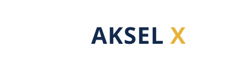
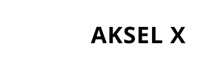

Ideia Central & Estratégia
Conceito
História do símbolo. Quatro pontas de lança partem de um centro comum — os quatro vetores da AKSEL X (tecnologia, dados, pessoas, negócios) saem da mesma decisão-dourada no núcleo. O X não apenas cruza: ele dispara em quatro direções, comunicando crescimento orgânico e ambição medida.
Justificativa estratégica. Liderança costuma posicionar em azul-royal (associação clássica a bancos, governo e escala global), mas o dourado de decisão rompe qualquer banalidade: a marca se apresenta como líder que decide rápido e cresce em ordem. É a proposta mais "multinacional" — desenhada para escritórios, roadshows, busca internacional de investidores e o acesso a mercados regulados ao redor do mundo.
Justificativa estratégica. Liderança costuma posicionar em azul-royal (associação clássica a bancos, governo e escala global), mas o dourado de decisão rompe qualquer banalidade: a marca se apresenta como líder que decide rápido e cresce em ordem. É a proposta mais "multinacional" — desenhada para escritórios, roadshows, busca internacional de investidores e o acesso a mercados regulados ao redor do mundo.
AmbiçãoEscalaLiderançaInternacionalProtagonistaDecisãoEm expansão
Símbolo
Vetor de Expansão
Fundo claro
Fundo escuro
Logotipo
Versões oficiais

Horizontal · fundo claro
Horizontal · fundo escuro

Monocromático preto

Monocromático branco
Paleta Cromática
Primária · secundária · apoio
PrimáriaRoyal#13294B
RGB 19 41 75 · CMYK 90 70 30 50
Pantone ~534 C
RGB 19 41 75 · CMYK 90 70 30 50
Pantone ~534 C
PrimáriaIndigo Global#1B3A8A
RGB 27 58 138 · CMYK 88 70 0 15
Pantone ~286 C
RGB 27 58 138 · CMYK 88 70 0 15
Pantone ~286 C
AcentoAurora Gold#E8B23A
RGB 232 178 58 · CMYK 8 33 90 0
Pantone ~7409 C
RGB 232 178 58 · CMYK 8 33 90 0
Pantone ~7409 C
ApoioIce#EEF3FB
RGB 238 243 251 · CMYK 6 4 0 0
RGB 238 243 251 · CMYK 6 4 0 0
ApoioSlate#5A6B85
RGB 90 107 133 · CMYK 68 50 25 20
RGB 90 107 133 · CMYK 68 50 25 20
ApoioMidnight#0A1019
RGB 10 16 25 · CMYK 75 55 40 80
RGB 10 16 25 · CMYK 75 55 40 80
ApoioWhite#FFFFFF
RGB 255 255 255 · CMYK 0 0 0 0
RGB 255 255 255 · CMYK 0 0 0 0
Tipografia
Sistema tipográfico
AKSEL X
Do Brasil para o mundo.
+6 continentes · uptime 99,9%
| Uso | Família | Estilo |
|---|---|---|
| Logotipo / títulos | Space Grotesk | Bold 700, letter-spacing −1 |
| Corpo / interface | Inter | Regular 400, Medium 500 |
| Dados, metabólicas, geolocalização | IBM Plex Mono | Regular 400 |
Aplicações
Amostras de presença e escala
Cartão de visita
App icon
Avatar
AKSEL X
Capa social
Favicon
Diferenciais & Limitações
Leitura honesta
Comunica escala, ambição e liderança de forma imediata.
A leitura "global" dá conforto para mercados internacionais e regulados.
Excelente em fachadas, banners, eventos e material de roadshow.
Núcleo dourado destaca a marca entre concorrentes azuis monótonos.
Azul-royal é a cor menos "surpreendente" das seis propostas.
Símbolo com muitos elementos (4 setas + 2 eixos) pode ficar ruidoso em tamanho pequeno — usar versão favicon simplificada.
Dourado precisa de prova de tinta para não virar "amarelo amargo" em impressão.
Arquivos Entregues
03 · Logotipos Vetoriais
PROPOSTA_06/ akselx_horizontal_color.svg — logotipo horizontal colorido akselx_vertical_color.svg — logotipo vertical (empilhado) akselx_simbolo_color.svg — símbolo isolado akselx_mono_black.svg — versão monocromática preta akselx_mono_white.svg — versão monocromática branca akselx_favicon_color.svg — favicon/símbolo reduzido